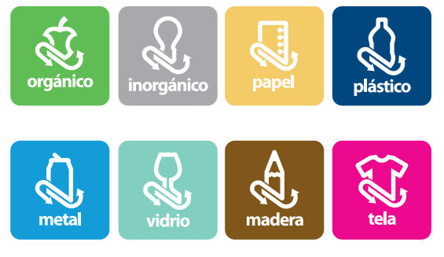

Contaminación en mi comunidad_Acciones para combatirla

Los principales afectados son los ancianos, los niños y personas que tienen problemas respiratorios, aunque, es posible que las demás personas puedan resultar igualmente afectadas. En otros casos, personas que no tienen acceso a agua potable o cocinan con estufas de combustión de carbón o leña también podrían verse afectadas. Consecuencias en el clima y el ambiente La presencia de CO2 en la atmósfera provoca la emisión de concentraciones excesivas que aumentan las posibilidades de aparición del efecto invernadero. Además de las alteraciones que provoca en el clima con los fenómenos metereológicos, es también capaz de impedir la siembra en secciones del suelo donde residen agentes contaminados. En otros, la contaminación creada a partir de la deforestación, es uno de los principales causantes de la contaminación de los suelos.
Llamamos basura al conjunto de desechos o residuos que se debe eliminar y que ha sido generado por el ser humano. Aunque no seamos conscientes de ello, diariamente acumulamos en todos los hogares una gran cantidad de residuos que deben ser clasificados correctamente para que lleguen al destino adecuado, dependiendo de su composición.
Pues bien, atendiendo a la composición, podemos clasificar la basura en distintas categorías: – Basura orgánica: es de origen biológico, es decir, alguna vez fue parte de un ser vivo. Por ejemplo: hojas, ramas, cáscaras… – Basura inorgánica: provienen de origen no biológico, industrial o cualquier otro proceso. Por ejemplo: plástico, vidrios o textiles sintéticos. – Residuos peligrosos: deben ser tratados de manera especial, ya sean de origen biológico o no. Por ejemplo: ácido, sustancias corrosivas o infecciosas. Es importante tener clara esta clasificación para saber cómo se clasifica la basura correctamente y poder realizar el proceso de reciclaje de manera eficiente para nuestro medio ambiente. Por, eso vamos a ver cómo se realiza este proceso y por qué es importante realizarlo. Cómo se clasifica la basura correctamente En la actualidad, la mayoría de ciudades cuentan con 5 contenedores de basura diferentes: – Papel y cartón – Plásticos y envases – Vidrio y cristales – Basura orgánica – Desechos

El 19 de abril, desde el año 1985, se celebra en diversas partes del mundo el Día de la Bicicleta. Se dice que esta fecha se empezó a conmemorar a raíz de que el químico suizo Albert Hofmann, ingirió un químico con el que experimentaba, llamado “LSD” (Dietilamida de Ácido Lisérgico) el cual tiene efectos psicotrópicos. Dicen que Albert Hofmann viajó un 19 de abril en su bicicleta bajo los efectos de este químico, narrando posteriormente su travesía en bicicleta bajo los efectos del LSD de la siguiente manera: “poco a poco comencé a disfrutar de una sucesión de colores y formas sin precedentes, aun con mis ojos cerrados. Fantásticas imágenes caleidoscópicas surgían en mí, alternantes, variadas, se abrían y cerraban en círculos y espirales, y explotaban como fuentes de color, se reordenaban y mezclaban en un flujo constante”. Este peculiar suceso acontecido en 1943, fue considerado en su momento un avance para la ciencia psiquiátrica, sin embargo fue hasta 1985 cuando el profesor estadounidense Thomas B. Roberts en el condado de DeKalb (Illinois, Estados Unidos), inició con la peculiar celebración del “Día de la Bicicleta” en conmemoración al descubrimiento de Hofmann.Si bien el día de la bicicleta no es celebrado a la fecha por Naciones Unidas o declarado día nacional por el gobierno de México, cada vez cobra más fuerza su conmemoración a nivel mundial; la misma se asocia al deporte y a las ciudades con menor índice de vehículos automotores para mitigar los diversos conflictos conocidos a la fecha derivados de su exceso.
Si celebras el día de la bicicleta rodando o te trasladas en este artefacto en tu día, recuerda que según el artículo 12 de la Ley de Movilidad y Transporte del Estado de Jalisco los ciclistas también pueden transitar por ciertas vialidades como un vehículo automotor y en síntesis tienen los siguientes derechos (entre otros):


 1
1 2
2 4
4